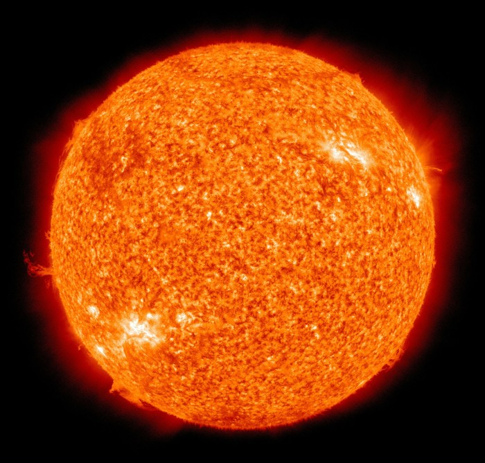
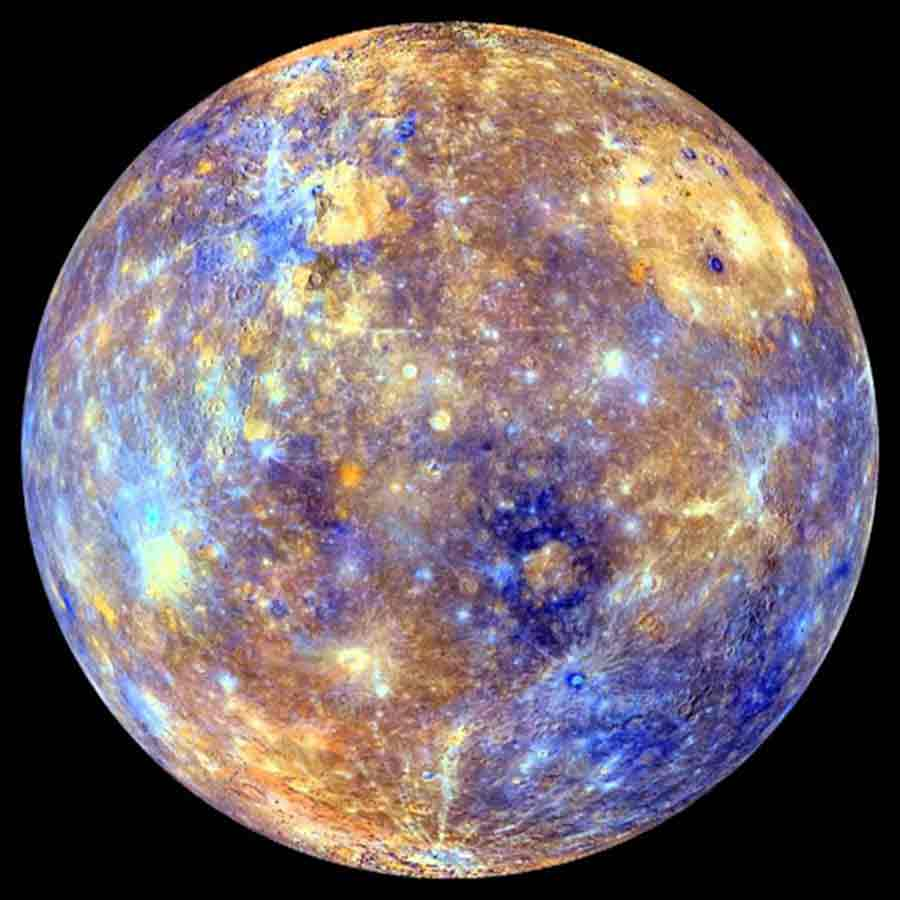
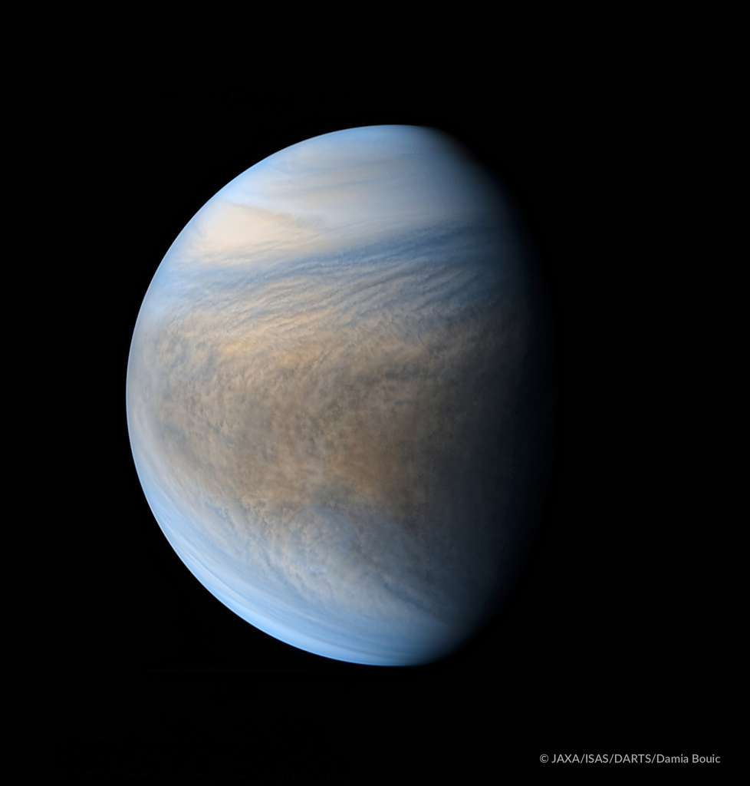
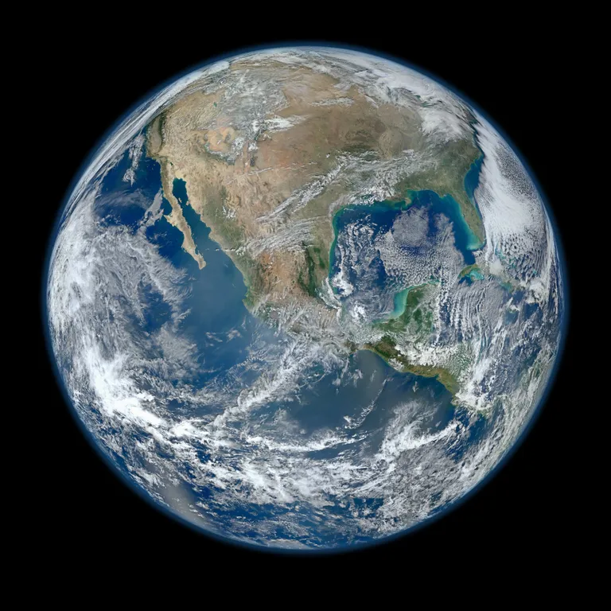
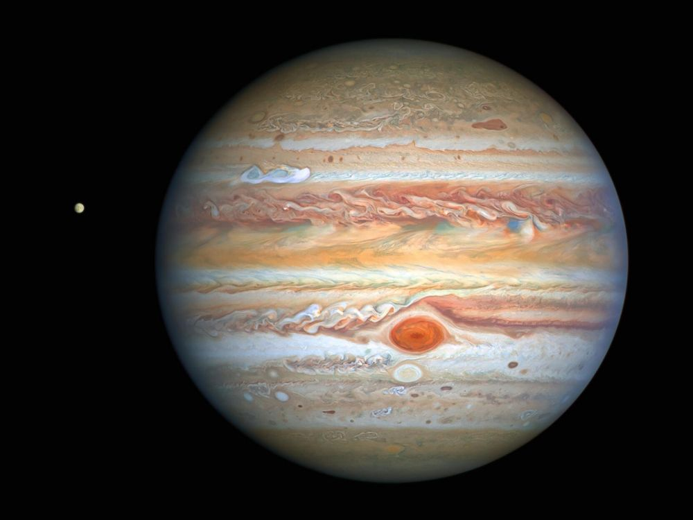
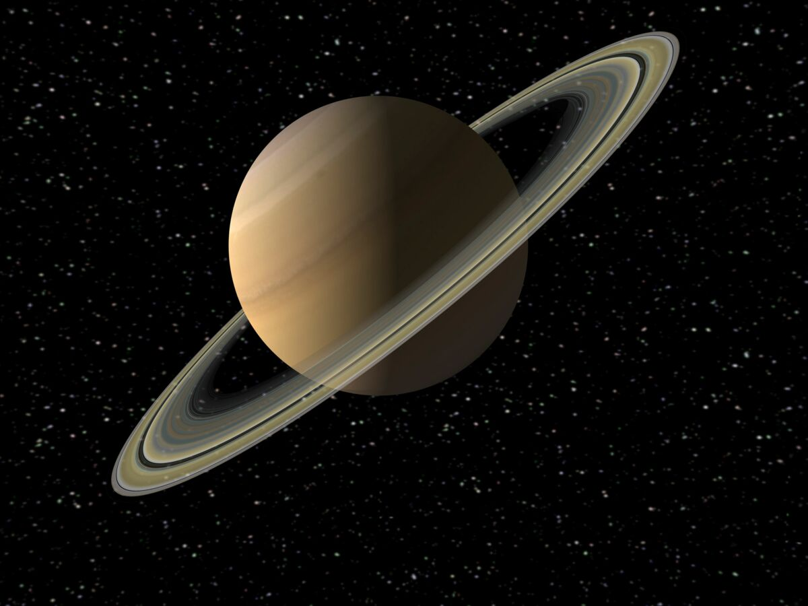
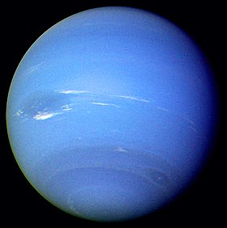
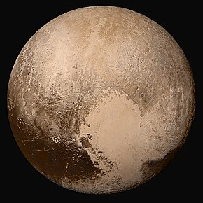

Notre Système Solaire
Notre Système Solaire
Notre Galaxie
Le Soleil
Mercure
Venus
La Terre
Mars
Jupiter
Saturne
Uranus
Neptune
Pluton
Le Soleil
Le Soleil est l'étoile du système solaire la plus proche de la Terre. En
effet elle est distante d'environ 150 millions de kilomètres de notre planète. Il se situe
dans la galaxie appelée "Voie Lactée". Autour de lui tourne huit planète:
Mercure, Venus, La Terre, Mars, Jupiter, Saturne, Uranus, et Neptune.


Mercure, cette planète est la plus proche du Soleil mais c'est aussi la moins massive. Elle peut être vu
depuis la Terre mais que dans deux condition: après le coucher du Soleil, ou avant le lever de celui-ci. De
plus, Mercure est l'une des deux planète rocheuse pouvant être considéré comme sphérique car son
aplatissement est presque nul.
Mercure
Venus
Venus, deuxième planète du système solaire,fait partie des planète
telluriques et porte le nom de la déesse romaine de l'amour et de la beauté. Sur Terre nous pouvons la voir
car c'est l'objet le plus brillant dans notre ciel après la lune. Elle est aussi appelée
par l'humanité "l'étoile du Berger".


La Terre, planète la plus connu du système solaire car elle abrite la vie, est la troisième
planète la plus éloignée du Soleil et est la cinquième plus grande. Cette planète tourne arrive a faire un
tour complet du Soleil en à peu près 365.25 jours et fait un tour complet sur elle même en 24h.
La Terre
Mars
Mars, quatrième planète tournant autour du Soleil, est la deuxieme
planète la plus petite du
système solaire derrière Mercure, et est une des quatres planètes
rocheuses. Cette planète porte le nom du
dieu de la protection agricole et de la guerre. Elle est aussi appelé "Planète
Rouge". Mars possède deux lunes Phobos et Deimos.


Jupiter, cinqième planète du système solaire, est la première planète dite gazeuse. En plus d'être la
première gazeuse et elle aussi la planète la plus grosse du système solaire avec un rayon équatorial
d'environ 71 492 km soit 11 fois celui de la Terre.
Elle est visible dans le ciel terrestre car elle est le troisième objet naturel le plus brillant et elle est
souvent accompagné de sa voisine Saturne. Jupiter possède aussi la plus grosse lune du système solaire
"Ganymède" qui est une de ses 79 lunes.
Jupiter
Saturne
Saturne, sixième planète du système solaire, est la deuxième plus
grande après Jupiter, mais
est la plus impressionnante. Tout d'abord Saturne est une planète dite
gazeuse, possédant un anneaux composé
d'innombrable morceaux de glace. Cette planète est visible depuis la Terre et est souvent
accompagné par une autre planète, Jupiter. Elle est aussi la planète possédant le plus de satellites
naturels, soit 82 confirmé. Elle possède aussi la deuxième plus grande lune du système solaire "Titan".


Uranus, septième planète du système solaire, porte le nom de dieu du ciel. Cette planète est une
des quatres géantes gazeuses et est une des deux géantes de glace, comme pour les autres elle possède une
grosse quantité de lune (27 confirmés). Uranus est visible depuis La Terre mais elle n'est pas tres
brillante, c'est à cause de cela que pendant longtemps elle n'a pas était reconnu comme une planète.
Uranus
Neptune
Neptune est la huitième et la derniere planète du système solaire. Mais celle-ci possède
quelques particularités: c'est la quatrième plus grande planète en diamètre, la troisième planète la plus
massive et la plus dense des quatres planètes géantes du système solaire. Neptune est la seule planète
n'étant pas visible depuis la Terre.
De plus, elle possède 14 lunes connues dont la plus connu qui est Triton.


Pluton, planète découverte en 1930 a perdu son statut de neuvième et dernière planète du système solaire en
Août 2006 car juger trop petite après une redéfiniton de ce qu'est une planète. A ce moment là Pluton voit
s'attribuer le statut de planète naine. De plus, elle se trouve dans la ceinture de Kuiper où se trouve une
multitude de petit astres comme elle.
Pluton
Le Soleil
Mercure
Venus
La Terre
Mars
Jupiter
Saturne
Uranus
Neptune
Pluton